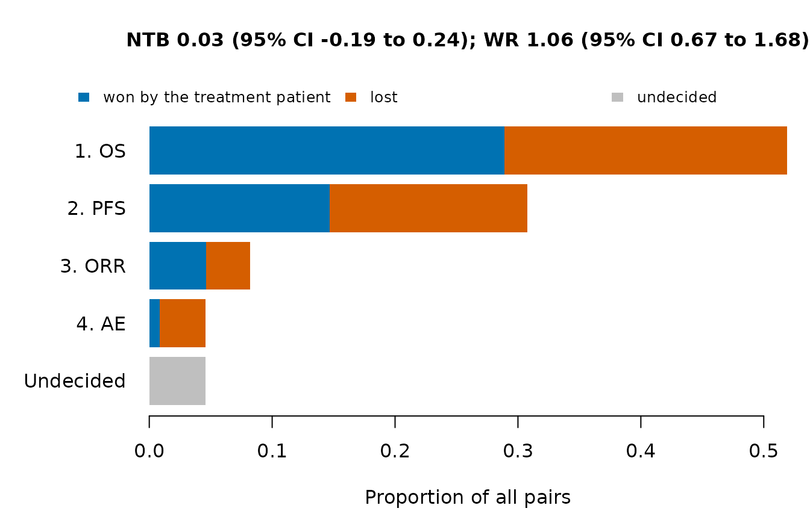
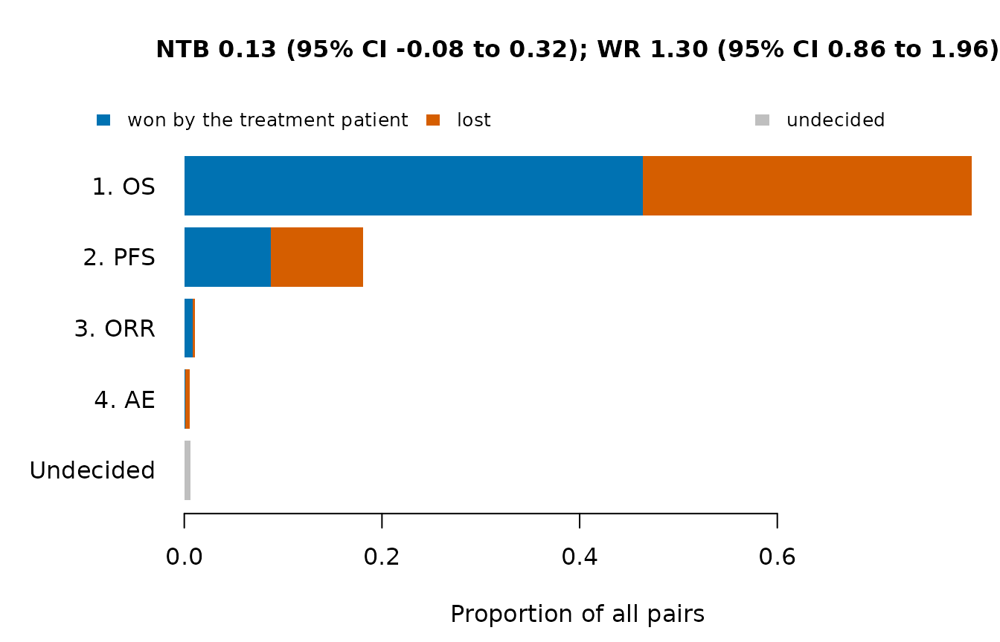
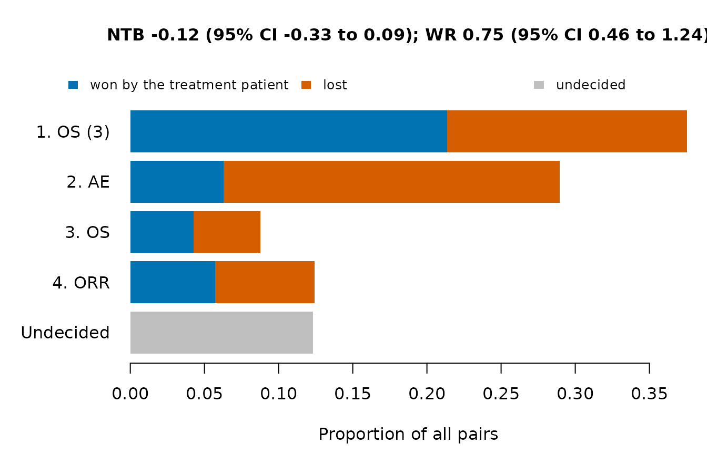

Generalized pairwise comparisons (Buyse, 2010) compare two cohorts on
several endpoints ranked by clinical priority. This article describes
the comparison of pairs, the scoring rules for censored times, the
statistics computed by WinStat() and their confidence
intervals.
Pairs and priority
Every patient of one cohort (called the treatment cohort) is compared with every patient of the other cohort (the control cohort). A pair is first compared on the endpoint of highest priority. If this endpoint shows which patient has the better outcome, the pair is a win or a loss for the treatment patient; otherwise the pair is compared on the next endpoint, and a pair that no endpoint decides is a tie. A binary endpoint decides a pair when the two values differ. A time-to-event endpoint decides a pair when one time is known to be longer than the other by at least a threshold; a threshold larger than 0 asks for a clinically relevant difference before a lower-priority endpoint is consulted.
With \(\pi_W\), \(\pi_L\) and \(\pi_T\) the proportions of pairs won, lost and tied, the net treatment benefit, the win ratio and the win odds are
\[\mathrm{NTB} = \pi_W - \pi_L, \qquad \mathrm{WR} = \frac{\pi_W}{\pi_L}, \qquad \mathrm{WO} = \frac{\pi_W + \pi_T / 2}{\pi_L + \pi_T / 2}.\]
The net treatment benefit lies between -1 and 1 and is 0 when the cohorts do not differ; the win ratio and the win odds are 1 in that case. The win ratio ignores the ties, so it can be large when few pairs are decided.
An example
One simulated trial with two cohorts of 50 patients, enrolled over 12 months and analyzed at month 18, so that many survival times are censored.
arms <- list(
Cohort1 = CorOncoEndpoints::OncoArm(pfs.median = 6, orr = 0.30, resp.cor = 0.4,
death.prop = 0.15, os.median = 15),
Cohort2 = CorOncoEndpoints::OncoArm(pfs.median = 8, orr = 0.45, resp.cor = 0.4,
death.prop = 0.15, os.median = 18))
d <- SimCohorts(nsim = 1, n = c(50, 50), arms = arms, ae.rate = c(0.20, 0.35),
cutoff = 18, a.time = c(0, 12), seed = 2)
eps <- list(
Endpoint("OS", "tte", time = "os_tte", event = "os_event"),
Endpoint("PFS", "tte", time = "pfs_tte", event = "pfs_event"),
Endpoint("ORR", "binary", var = "response"),
Endpoint("AE", "binary", var = "ae", higher.better = FALSE))
w <- WinStat(d, eps, treatment = "Cohort2", control = "Cohort1")
w
#> Generalized pairwise comparisons: Cohort2 (treatment) vs Cohort1 (control)
#> Patients: 50 and 50 (2500 pairs); scoring rule of Gehan
#>
#> Proportions of all pairs won, lost and still undecided by priority level:
#> priority endpoint threshold win loss undecided
#> 1 OS 0 0.2888 0.2300 0.4812
#> 2 PFS 0 0.1468 0.1608 0.1736
#> 3 ORR 0 0.0464 0.0356 0.0916
#> 4 AE 0 0.0084 0.0372 0.0460
#>
#> Pairs won 0.49, lost 0.464, tied 0.046
#>
#> 95% confidence intervals:
#> statistic estimate se lower upper
#> NTB 0.0268 0.112 -0.191 0.242
#> WR 1.0578 0.249 0.667 1.677
#> WO 1.0551 0.237 0.680 1.638The table by priority level (the element by.endpoint of
the result) gives the proportions of all pairs won and lost at each
level and the proportion still undecided after it. plot()
draws the same proportions, with the net treatment benefit and the win
ratio in the title.
plot(w)
Of the pairs, 48% are not decided by OS: the pairs in which the shorter observed time is censored.
Scoring rules for censored times
With the rule of Gehan (1965), the default, a pair is decided on a time-to-event endpoint only when the shorter observed time is an event, so that the comparison is certain. Pairs in which the shorter time is censored are passed to the next endpoint, which gives the lower-priority endpoints more weight as censoring increases.
The rule of Péron et al. (2018) uses the Kaplan-Meier estimate of each cohort to score these pairs. The true time of a censored patient is given the distribution of the Kaplan-Meier estimate of its cohort beyond the censoring time, and the pair is won with the probability that the treatment time is longer by at least the threshold and lost with the probability that the control time is longer. The Kaplan-Meier estimate is not defined after the largest observed time of a cohort, so the probability beyond that time is counted only when the comparison holds wherever the true time lies; the rest of the pair goes to the next endpoint.
wp <- WinStat(d, eps, treatment = "Cohort2", control = "Cohort1", scoring = "peron")
rbind(Gehan = w$estimate, Peron = wp$estimate)
#> p_win p_loss p_tie ntb wr wo
#> Gehan 0.4904000 0.46360 0.04600000 0.0268000 1.057808 1.055076
#> Peron 0.5610717 0.43263 0.00629831 0.1284418 1.296886 1.294741
plot(wp)
With the Péron rule, OS leaves 20% of the pairs undecided instead of
48%. The script inst/validation/validate_winstat.R compares
the results of both rules with those of the BuyseTest package.
Thresholds and repeated endpoints
The priority order and the thresholds are given by
priority and threshold, one threshold per
priority level (0 for binary endpoints). An endpoint can be used more
than once with decreasing thresholds: below, a pair is first compared on
OS with a threshold of 3 months, then on the adverse event, then again
on OS with a threshold of 0, and finally on response.
w3 <- WinStat(d, eps, treatment = "Cohort2", control = "Cohort1",
priority = c("OS", "AE", "OS", "ORR"), threshold = c(3, 0, 0, 0))
plot(w3)
With the Gehan rule used here, a pair decided by OS with the threshold of 3 months is not compared again. With the Péron rule, the second use of OS adds, for the pairs still undecided by the adverse event, the probability of a win at the threshold of 0 minus the probability of a win at the threshold of 3 months, so that no part of a pair is counted twice.
Standard errors and confidence intervals
The proportions of pairs won and lost are two-sample U-statistics. With \(W_{ij}\) the score of the pair of treatment patient \(i\) and control patient \(j\) (\(1\) for a win and \(0\) otherwise, or a probability with the Péron rule), \(m\) and \(n\) the cohort sizes and \(\hat\pi_W\) the mean of the \(W_{ij}\), the variance of \(\hat\pi_W\) is estimated from the first-order H-decomposition as
\[\widehat{\mathrm{Var}}(\hat\pi_W) = \frac{1}{m^2} \sum_{i = 1}^{m} \Bigl(\frac{1}{n} \sum_{j = 1}^{n} W_{ij} - \hat\pi_W\Bigr)^2 + \frac{1}{n^2} \sum_{j = 1}^{n} \Bigl(\frac{1}{m} \sum_{i = 1}^{m} W_{ij} - \hat\pi_W\Bigr)^2,\]
and likewise for the losses and the covariance of wins and losses (Bebu and Lachin, 2016). The confidence interval of the net treatment benefit is computed on the scale of \(\mathrm{atanh}(\mathrm{NTB})\), which keeps it within \((-1, 1)\), that of the win ratio on the log scale, and that of the win odds is the interval of the net treatment benefit transformed by \((1 + x) / (1 - x)\).
w$ci
#> statistic estimate se lower upper
#> 1 NTB 0.026800 0.1121017 -0.1907032 0.2417949
#> 2 WR 1.057808 0.2487488 0.6671797 1.6771474
#> 3 WO 1.055076 0.2367217 0.6796797 1.6378088With the Péron rule the Kaplan-Meier estimates are treated as known, so the standard errors are approximate and tend to be too small. Decision rules based on the net treatment benefit, the win ratio or the win odds with thresholds calibrated by simulation, as in Evaluating decision rules by simulation, do not use the standard errors.
References
Bebu, I. and Lachin, J. M. (2016). Large sample inference for a win ratio analysis of a composite outcome based on prioritized components. Biostatistics, 17, 178-187. https://doi.org/10.1093/biostatistics/kxv032
Buyse, M. (2010). Generalized pairwise comparisons of prioritized outcomes in the two-sample problem. Statistics in Medicine, 29, 3245-3257. https://doi.org/10.1002/sim.3923
Gehan, E. A. (1965). A generalized Wilcoxon test for comparing arbitrarily singly-censored samples. Biometrika, 52, 203-223. https://doi.org/10.1093/biomet/52.1-2.203
Péron, J., Buyse, M., Ozenne, B., Roche, L. and Roy, P. (2018). An extension of generalized pairwise comparisons for prioritized outcomes in the presence of censoring. Statistical Methods in Medical Research, 27, 1230-1239. https://doi.org/10.1177/0962280216658320